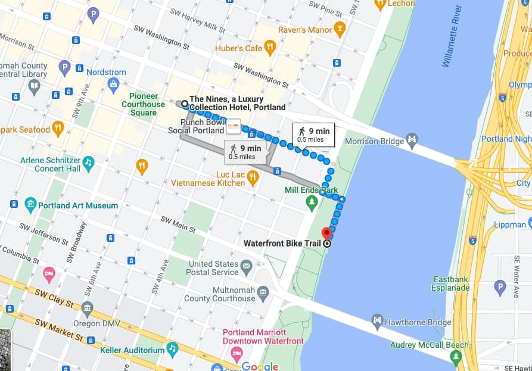

Main Conference Program
| IoT Day Monday, June 27th |
Tuesday, June 28th | Wednesday, June 29th | Thursday, June 30th | Friday, July 1st | |
| 8:15 | Welcome |
Workshops:
BodySys IASA EMDL DroNet DigiBiom |
|||
| 8:30 |
Keynote Speech #1
Mani Srivastava 8:30-9:45 |
Introduction |
Session VII: Everything wireless 8:30-10:00 |
||
| 8:40 |
Keynote Speech
Andrea Goldsmith 8:40-9:40 |
||||
| 8:45 | Welcome Address | ||||
| 9:00 | Introduction | ||||
| 9:10 |
Keynote Speech
Fadel Adib 9:10-10:10 |
||||
| 9:30 | |||||
| 9:40 | Break | ||||
| 9:45 |
Keynote Speech #2
Jae Kim 9:45-11:00 |
||||
| 9:55 |
Session IV: Better, Faster, Safer 9:55-11:05 |
||||
| 10:00 | Break Computer Science at Portland State |
||||
| 10:10 | Break Juniper |
||||
| 10:30 |
Session I: There is an app for that. 10:30-12:00 |
Session VIII: Better than it sounds 10:30-12:30 |
|||
| 11:00 | Break Microsoft |
||||
| 11:05 | Break | ||||
| 11:15 |
Keynote Speech #3
Chenyang Lu 11:15-12:30 |
||||
| 11:20 |
Session V Deep inference on the go 11:20-12:30 |
||||
| 12:00 | Lunch + Test of Time Awards (Interactive Panel with Awardees) | ||||
| 12:30 | Lunch | Lunch + Test of Time Awards | Lunch | ||
| 13:30 |
Keynote Speech #4
Matthew Caesar 1:30-2:45 |
Session II: Drones and Robots 13:30-15:00 |
|||
| 13:45 |
Session VI: All that IoT 13:45-15:45 |
||||
| 13:50 |
Session IX: Learning on the device 13:50-15:00 |
||||
| 14:45 | Break | ||||
| 15:00 |
Keynote Speech #5
Luca Mottola 3:00-4:15 |
Break Maseeh College of Engineering and Computer Science |
Break | ||
| 15:20 |
Session X: Tracking the wave 15:20-16:30 |
||||
| 15:30 |
Session III: Driving and such 15:30-17:00 |
||||
| 15:45 | Break | ||||
| 16:00 |
Keynote Speech
Constantine Polychronopoulos 16:00-17:00 |
||||
| 16:15 | Wrap up | ||||
| 16:30 | Break | Award ceremony and Closing | |||
| 17:00 |
N2Women Panel Discussion 17:00-18:00 |
Break | Break | ||
| 18:00 |
N2Women Mentorship Reception 18:00-19:00 |
Poster and Demo Session Reception 18:00-20:00 |
|||
| 18:30 |
Banquet
Portland Spirit Cruise 18:30-21:30 |
||||
| 19:00 | |||||
| 20:00 |
Note: The registration desk will be open from 7:30 - 3:30 Monday and Tuesday and 7:30 - 11:30 am every other day of the conference.
Session I: There is an app for that.
Tuesday (June 28th, 10:30 - 12:00)
Session Chair: Yasaman Ghasempour (Princeton)
-
FabToys: Plush Toys with Large Arrays of Fabric-based Pressure Sensors to Enable Fine-grained Interaction Detection
Ali Kiaghadi, Jin Huang, Seyyedeh Zohreh Homayounfar, Trisha Andrew, Deepak Ganesan (UMass Amherst) -
Sunflower: Locating Underwater Robots From the Air
Charles J. Carver, Qijia Shao, Samuel Lensgraf, Amy Sniffen, Maxine Perroni-Scharf, Hunter Gallant, Alberto Quattrini Li, Xia Zhou (Dartmouth College) -
DeepMix: Mobility-aware, Lightweight, and Hybrid 3D Object Detection for Headsets
Yongjie Guan, Xueyu Hou (New Jersey Insititute of Technology); Nan Wu, Bo Han (George Mason University); Tao Han (New Jersey Institute of Technology) -
Detecting Counterfeit Liquid Food Products in a Sealed Bottle Using a Smartphone Camera
Bangjie Sun, Sean Rui Xiang Tan, Zhiwei Ren, Mun Choon Chan (National University of Singapore); Jun Han (Yonsei University)
Session II: Drones and Robots
Tuesday (June 28th, 13:30 - 15:00)
Session Chair: Ardalan Amiri Sani (University of California Irvine)
-
Reverse Engineering and Retrofitting Robotic Aerial Vehicle Control Firmware using DisPatch
Taegyu Kim (The Pennsylvania State University); Aolin Ding (Accenture Labs, Accenture); Sriharsha Etigowni (Purdue University); Pengfei Sun (F5 Networks); Jizhou Chen (Purdue University); Luis Garcia (University of Southern California, Information Sciences Institute); Saman Zonouz (Georgia Institute of Technology); Dongyan Xu and Dave (Jing) Tian (Purdue University) -
G2Auth: Secure Mutual Authentication for Drone Delivery Without Special User-Side Hardware
Chuxiong Wu, Xiaopeng Li, Lannan Luo, Qiang Zeng (University of South Carolina) -
Best Paper! SPiDR: Ultra-low-power Acoustic Spatial Sensing for Micro-robot Navigation
Yang Bai, Nakul Garg, Nirupam Roy (University of Maryland, College Park) -
Wi-Drone: Wi-Fi-based 6-DoF Tracking for Indoor Drone Flight Control
Guoxuan Chi, Zheng Yang, Jingao Xu (Tsinghua University); Chenshu Wu (The University of Hong Kong); Jialin Zhang, Jianzhe Liang, Yunhao Liu (Tsinghua University)
Session III: Driving and such
Tuesday (June 28th, 15:30 - 17:00)
Session Chair: Robert LiKamWa (Arizona State University)
-
AutoCast: Scalable Infrastructure-less Cooperative Perception for Distributed Collaborative Driving
Hang Qiu, Po-Han Huang, Namo Asavisanu, Xiaochen Liu, Konstantinos Psounis, Ramesh Govindan (University of Southern California) -
Battery-Enabled Anti-Theft Vehicle Immobilizer
Liang He (University of Colorado Denver); Kang G. Shin (The University of Michigan) -
Mosaic: Leveraging Diverse Reflector Geometries for Omnidirectional Around-Corner Automotive Radar
Timothy Woodford, Xinyu Zhang (University of California San Diego); Eugene Chai (NEC Labs America); Karthik Sundaresan (Georgia Tech) -
Motion Inspires Notion: Self-supervised Visual-LiDAR Fusion for Environment Depth Estimation
Danyang Li, Jingao Xu, Zheng Yang, Qian Zhang, Qiang Ma (Tsinghua University); Li Zhang (HeFei University of Technology, China); Pengpeng Chen (China University of Mining and Technology)
Session IV: Better, Faster, Safer
Wednesday (June 29th, 9:55 - 11:05)
Session Chair: Falko Dressler (Technische Universität Berlin)
-
Floo: Automatic, Lightweight Memoization for Faster Mobile Apps
Murali Ramanujam, Helen Chen (Princeton University); Shaghayegh Mardani (UCLA); Ravi Netravali (Princeton University) -
Global Mobile Network Aggregators: Taxonomy, Roaming Performance and Optimization
Sergi Alcala (Institute IMDEA Networks); Aravindh Raman (Telefonica Research); Weili Wu (Northwestern University); Andra Lutu (Telefonica Research); Marcelo Bagnulo Braun (University Carlos III of Madrid); Ozgu Alay (University of Oslo); Fabián Bustamante (Northwestern University) -
Vronicle: Verifiable Provenance for Videos from Mobile Devices
Yuxin (Myles) Liu, Yoshimichi Nakatsuka, Ardalan Amiri Sani (University of California, Irvine); Sharad Agarwal (Microsoft); Gene Tsudik (University of California, Irvine)
Session V: Deep inference on the go
Wednesday (June 29th, 11:20 - 12:30)
Session Chair: Carlee Joe-Wong (Carnegie Mellon University)
-
mGEMM: Low-latency Convolution with Minimal Memory Overhead Optimized for Mobile Devices
Jongseok Park, Kyungmin Bin, Kyunghan Lee (Seoul National University) -
Band: Coordinated Multi-DNN Inference on Heterogeneous Mobile Processors
Joo Seong Jeong, Jingyu Lee, Donghyun Kim, Changmin Jeon, Changjin Jeong, Youngki Lee (Seoul National University); Byung-Gon Chun (Seoul National University, FriendliAI) -
CoDL: Efficient CPU-GPU Co-execution for Deep Learning Inference on Mobile Devices
Fucheng Jia, Deyu Zhang (Central South University); Ting Cao, Shiqi Jiang (Microsoft Research); Yunxin Liu, Ju Ren, Yaoxue Zhang (Tsinghua University)
Session VI: All that IoT
Wednesday (June 29th, 13:45 - 15:45)
Session Chair: Jeremy Andrus (Apple)
-
Judo: Addressing the Energy Asymmetry of Wireless Embedded Systems through Tunnel Diode based Wireless Transmitters
Ambuj Varshney (University of California, Berkeley and National University of Singapore); Wenqing Yan (Uppsala University, Sweden); Prabal Dutta (University of California, Berkeley) -
Intermittently-Powered Bluetooth that Works
Jasper de Winkel, Haozhe Tang, Przemysław Pawełczak (Delft University of Technology) -
TEO: Ephemeral Ownership for IoT Devices to Provide Granular Data Control
Han Zhang, Yuvraj Agarwal, Matt Fredrikson (Carnegie Mellon University) -
TinyNet: a Lightweight, Modular, and Unified Network Architecture for the Internet of Things
Wei Dong, Jiamei Lv, Gonglong Chen, Yihui Wang, Huikang Li, Yi Gao (Zhejiang University); Dinesh Bharadia (University of California San Diego) -
Bringing WebAssembly to Resource-constrained IoT Devices for Seamless Device-Cloud Integration
Borui Li, Hongchang Fan, Yi Gao, Wei Dong (Zhejiang University)
Session VII: Everything wireless
Thursday (June 30th, 8:30 - 10:00)
Session Chair: Robin Kravets (University of Illinois Urbana-Champaign)
-
Best Paper! OmniScatter: Extreme Sensitivity mmWave Backscattering Using Commodity FMCW Radar
Kang Min Bae, Namjo Ahn (KAIST); Yoon Chae, Parth Pathak (George Mason University); SungMin Sohn (Arizona State University); Song Min Kim (KAIST) -
TransFi: Emulating Custom Wireless Physical Layer from Commodity WiFi
Ruirong Chen, Wei Gao (University of Pittsburgh) -
Enabling Software-defined PHY for Backscatter Networks
Fengyuan Zhu, Mingwei Ouyang, Luwei Feng, Yaoyu Liu, Xiaohua Tian, Meng Jin, Dongyao Chen, Xinbing Wang (Shanghai Jiao Tong University) -
Content-Agnostic Backscatter from Thin Air
Yifan Yang, Longzhi Yuan (University of Science and Technology of China); Jia Zhao (Simon Fraser University); Wei Gong (University of Science and Technology of China)
Session VIII: Better than it sounds
Thursday (June 30th, 10:30 - 12:30)
Session Chair: Nirupam Roy (University of Maryland)
-
ClearBuds: Wireless Binaural Earbuds for Learning-based Speech Enhancement
Ishan Chatterjee, Maruchi Kim, Vivek Jayaram, Shyamnath Gollakota, Ira Kemelmacher, Shwetak Patel, Steve Seitz (University of Washington) -
EarHealth: An Earphone-based Acoustic Otoscope for Detection of Multiple Ear Diseases in Daily Life
Yincheng Jin (Computer Science and Engineering, University at Buffalo, SUNY); Yang Gao (Computer Science, Northwestern University); Xiaotao Guo (Department of Otolaryngology-Head and Neck Surgery, The First Affiliated Hospital of University of Science and Technology of China); Jun Wen (Medical School, Harvard University); Zhengxiong Li (University of Colorado Denver); Zhanpeng Jin (SUNY University at Buffalo) -
MagSnoop: Listening to Sounds Induced by Magnetic Field Fluctuations to Infer Mobile Payment Tokens
Myeongwon Choi (School of Computer Science and Engineering, Chung-Ang University); Sangeun Oh (Department of Software & Computer Engineering, Ajou University); Insu Kim, Hyosu Kim (School of Computer Science and Engineering, Chung-Ang University) -
HearMeOut: Detecting Voice Phishing Activities in Android
Joongyum Kim, Jihwan Kim, Seongil Wi, Yongdae Kim, Sooel Son (KAIST) -
MagEar: Eavesdropping via Audio Recovery using Magnetic Side Channel
Qianru Liao, Yongzhi Huang, Yandao Huang, Yuheng Zhong, Huitong Jin, Kaishun Wu (Shenzhen University)
Session IX: Learning on the device
Thursday (June 30th, 13:50 - 15:00)
Session Chair: Youngki Lee (Seoul National University)
-
FedBalancer: Data and Pace Control for Efficient Federated Learning on Heterogeneous Clients
Jaemin Shin (School of Computing, KAIST); Yuanchun Li, Yunxin Liu (Institute for AI Industry Research (AIR), Tsinghua University); Sung-Ju Lee (School of Electrical Engineering, KAIST) -
Memory-efficient DNN Training on Mobile Devices
In Gim, JeongGil Ko(Yonsei University) -
Melon: Breaking the Memory Wall for Resource-Efficient On-Device Machine Learning
Qipeng Wang (Peking University); Mengwei Xu (Beijing University of Posts and Telecommunications); Chao Jin, Xinran Dong (Peking University); Jinliang Yuan (Beijing University of Posts and Telecommunications); Xin Jin, Gang Huang (Peking University); Yunxin Liu (Institute for AI Industry Research (AIR), Tsinghua University); Xuanzhe Liu (Peking University)
Session X: Tracking the wave
Thursday (June 30th, 15:20 - 16:30)
Session Chair: Songmin Kim (Korea Advanced Institute of Science and Technology)
-
Augmenting mmWave Localization Accuracy Through Sub-6 GHz on Off-the-Shelf Devices
Alejandro Blanco (IMDEA Networks; Universidad Carlos III); Pablo Jiménez Mateo (IMDEA Networks Institute and University Carlos III Madrid); Francesco Gringoli (Università di Brescia); Joerg Widmer (IMDEA Networks) -
MetaSight: Localizing Blocked RFID Objects by Modulating NLOS Signals via Metasurfaces
Dianhan Xie, Xudong Wang, Aimin Tang (Shanghai Jiao Tong University) -
m^3Track: mmWave-based Multi-User 3D Posture Tracking
Hao Kong (Shanghai Jiao Tong University); Xiangyu Xu (Southeast University); Jiadi Yu, Qilin Chen (Shanghai Jiao Tong University); Chenguang Ma (Ant Financial Services Group); Yingying Chen (Rutgers University); Yi-Chao Chen, Linghe Kong (Shanghai Jiao Tong University)
Banquet
Banquet will be held on the Portland Spirit Cruise. For any questions, refer to our local arrangements chair (Wu-Chang Feng, wuchang@pdx.edu).
Boarding Location: Salmon Springs Fountain in the waterfront park. The ship is docked by the river in front of the fountain. Location is also shown in the map above and is a ten minutes walking distance from the hotel.
Boarding Time: 6:30 - 7 pm. Please be at the docking station by 6:30 pm. We will also have two guides who would depart from the hotel main entrance (on SW Morrison St) at 6:20 pm. If you need assistance in getting to the cruise, make sure to join them.
Cruise Duration: 2.5 hours. We will be back to the same boarding location at 9:30 pm.
Identity Check: Please make sure to bring your conference badge (or ID) in order to board the ship.
